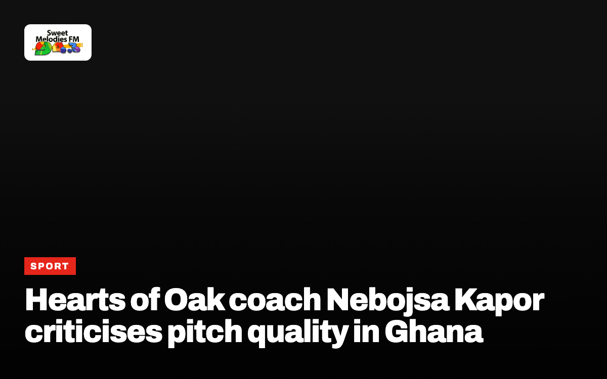
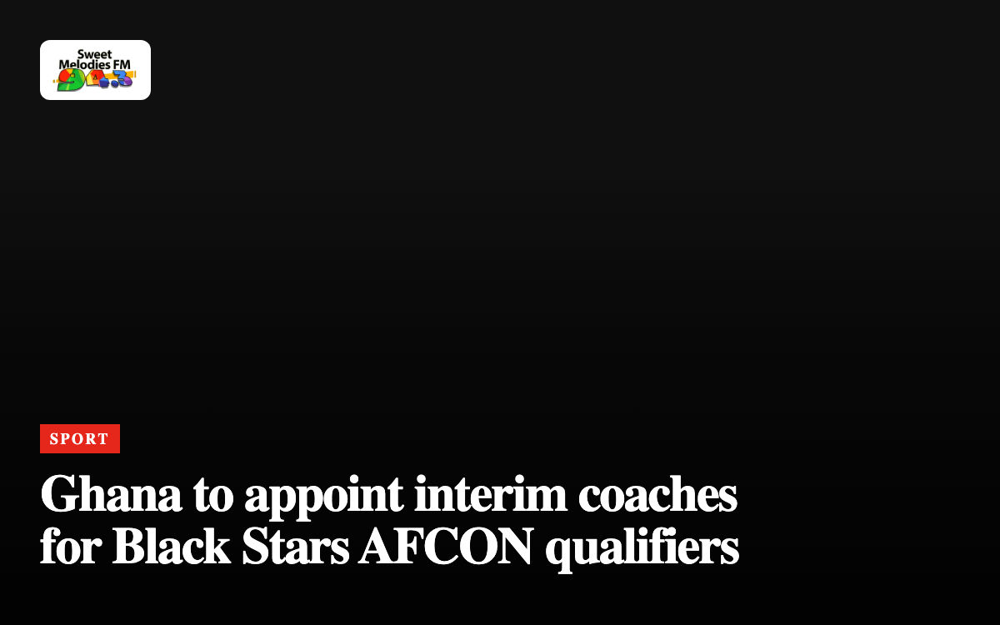
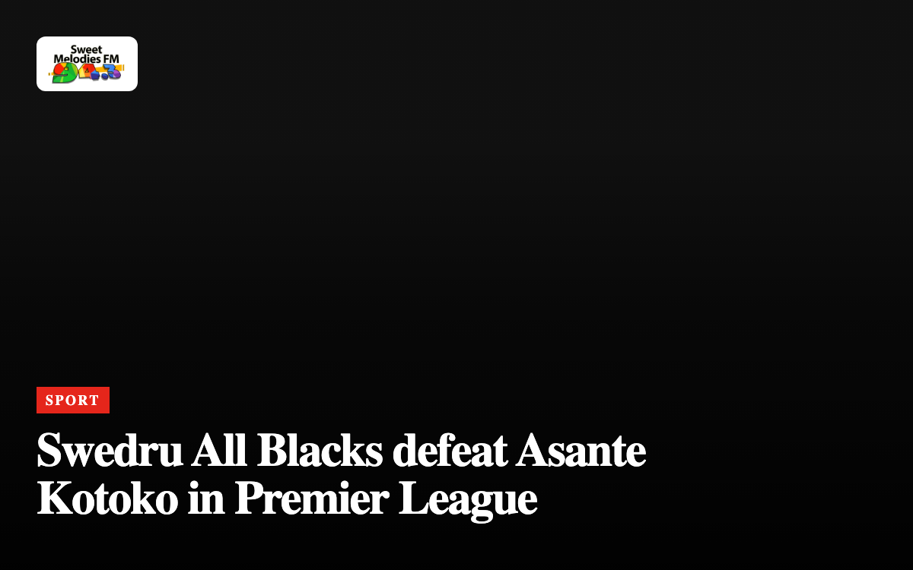
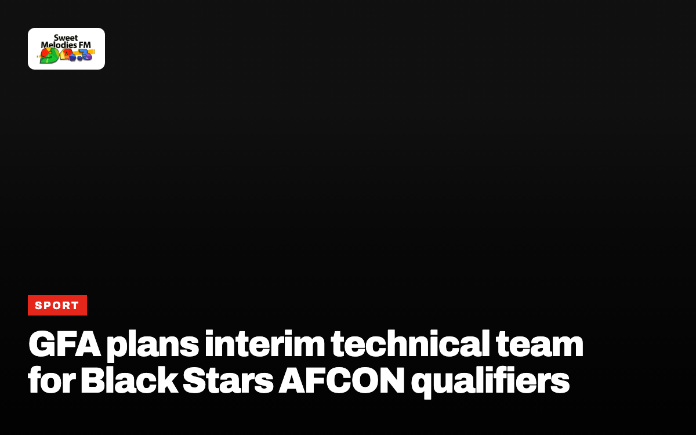
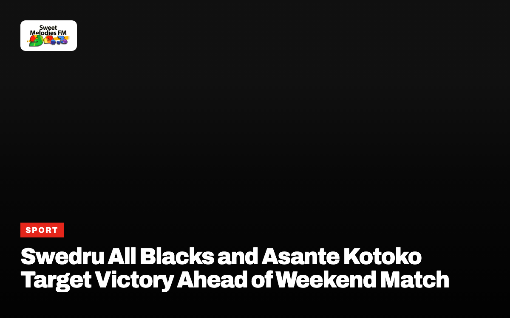
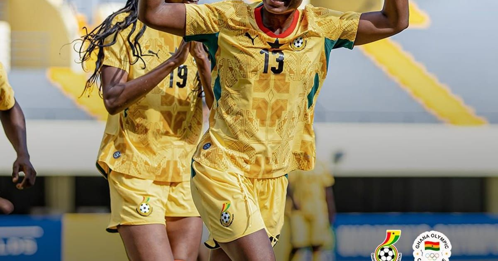
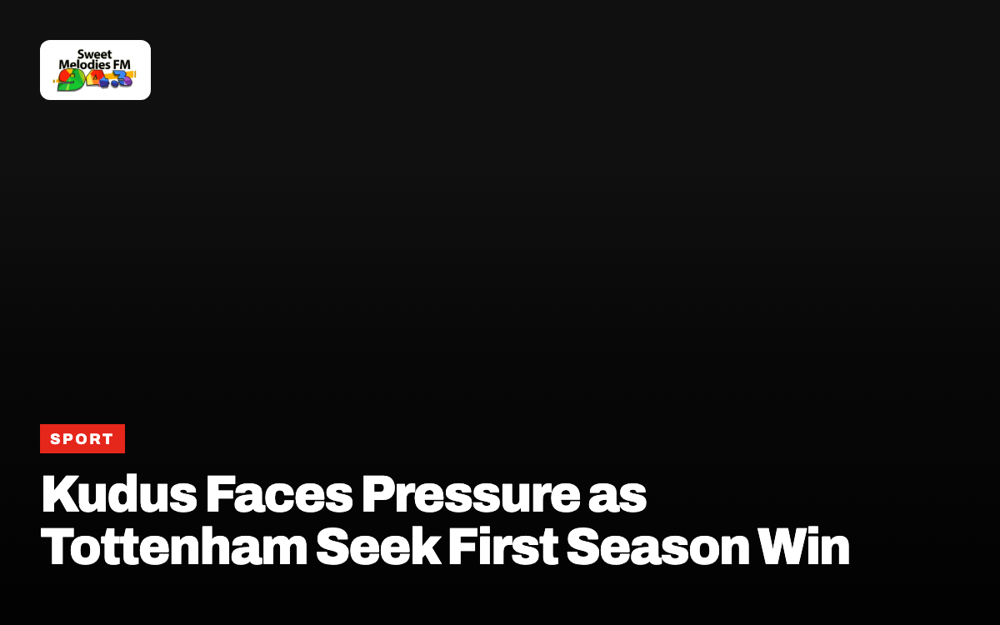
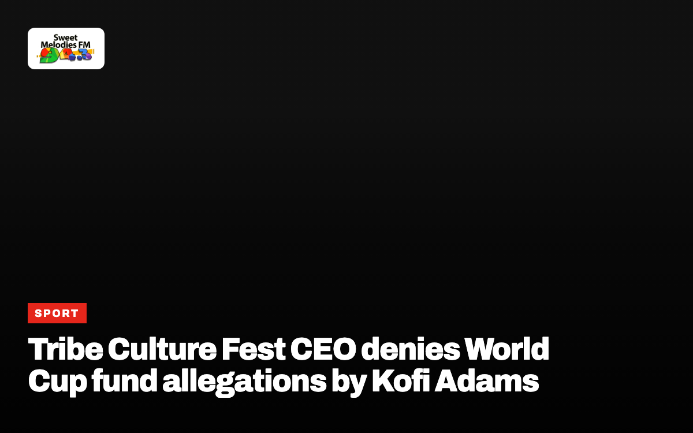
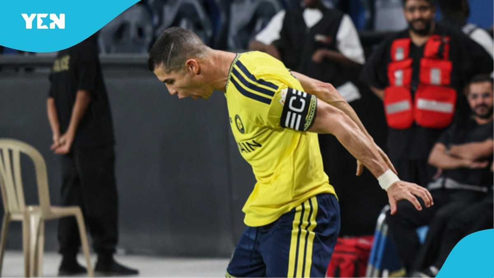

Sport

Black Queens Name Lineup For Olympic Qualifier Against Mauritius
Coach Kim Lars Björkegren urges improved finishing as Ghana hosts Mauritius in an LA 2028 Olympic qualifying match.

Nana Fitz urges GFA and Sports Ministry not to rush Black Stars appointment
The sports administrator says football leaders must take time when selecting the next head coach for the national team.

Ghana Premier League title race opens up after decline of top clubs
Football analyst Dennis Nyaku says slumping performances from Accra Hearts of Oak and Asante Kotoko have widened competition across the national league.

Black Maidens Receive Integrity Briefing Before FIFA U-17 World Cup
Ghana’s national under-17 women’s team has been educated on match-fixing risks ahead of their global tournament.

GFA fines Bibiani Gold Stars over CEO misconduct
The Ghana Football Association penalised the Western North club GH¢5,000 following an incident involving CEO Kwasi Adu during a match against Hearts of Oak.

Black Queens arrive in Takoradi for Olympic qualifier against Mauritius
Ghana’s women’s national team holds a 3-0 lead heading into the second leg match at Essipong Stadium.

Ghana U17 team targets semi-finals ahead of Benin clash
A victory against Benin will guarantee the Black Starlets a place in the last four of the WAFU Zone B Championship.

Black Queens host Mauritius in Olympic qualifier at reopened Essipong Stadium
Ghana holds a 3-0 advantage heading into the second leg of the 2028 Olympic qualifier in Sekondi-Takoradi.

Hearts of Oak coach Nebojsa Kapor criticises pitch quality in Ghana
Accra Hearts of Oak manager Nebojsa Kapor says poor playing surfaces across Ghana remain a major hurdle for national football development.
SportGhana beat Togo 1-0 in WAFU Zone B U17 opener
Midfielder David Kwarteng scored the early winning goal to place the Black Starlets top of Group A in Burkina Faso.

Medeama stay top of Ghana Premier League as Kotoko fall to All Blacks
Matchday six results saw Hearts of Oak, Bechem United and Berekum Chelsea secure victories on Sunday, 11 October 2026.

Ghana to appoint interim coaches for Black Stars AFCON qualifiers
An interim technical team will take charge of the national football squad for upcoming continental qualifying matches.

Medeama SC maintain Ghana Premier League lead as Hearts of Oak win
Medeama SC opened a three-point lead at the top of the Ghana Premier League table after matchday six victories.
SportGhana defeat Togo to lead WAFU Zone B U17 tournament
David Kwarteng scored early as the Black Starlets secured three points in Ouagadougou.

Swedru All Blacks defeat Asante Kotoko in Premier League
A stoppage-time penalty from Wiafe Darkwah secures a 1-0 victory over Asante Kotoko in week six of the Ghana Premier League.
SportHarry Kane leads Ballon d’Or race after two assists for Bayern Munich
The England captain created two goals in a two-two draw at Augsburg to strengthen his standing in award projections.

GFA plans interim technical team for Black Stars AFCON qualifiers
The Ghana Football Association will rely on temporary coaches for November’s 2027 AFCON qualifying matches against Somalia.

Swedru All Blacks and Asante Kotoko Target Victory Ahead of Weekend Match
Players from both teams express strong confidence ahead of their league fixture scheduled for Saturday, 10 October 2026.

Ghana beat Mauritius 7-0 to advance in 2028 Olympic qualifiers
The Black Queens secure a ten-nil aggregate win and will meet Zambia in the third round of qualifying.

Kudus Faces Pressure as Tottenham Seek First Season Win
Ghanaian player Kudus comes under focus while Tottenham aim to secure their initial victory of the campaign, GhanaSoccernet reported.

Tribe Culture Fest CEO denies World Cup fund allegations by Kofi Adams
The event organiser has challenged the sports minister to substantiate claims or retract comments about missing tournament money.
SportTribe Culture Fest CEO denies 611,000 dollar World Cup visa claim
Sports Minister Kofi Adams and event organizers offer conflicting accounts over diplomatic engagements and foreign funds.
SportKofi Adams denies Sports Ministry role in World Cup visa controversy
An aide says the National Sports Authority, Tourism Authority and TRIBE Culture Fest had separate embassy arrangements.
SportPortuguese Football Federation provisionally suspends Cristiano Ronaldo
The 41-year-old Al-Nassr captain faces a potential six-month ban after leaving Portugal’s camp over selection disagreements with manager Jorge Jesus.

Cristiano Ronaldo scores 980th career goal as Al-Nassr defeat Diriyah
The Portuguese forward scored in Al-Nassr’s 3-0 victory after leaving his national team camp following a dispute with head coach Jorge Jesus.